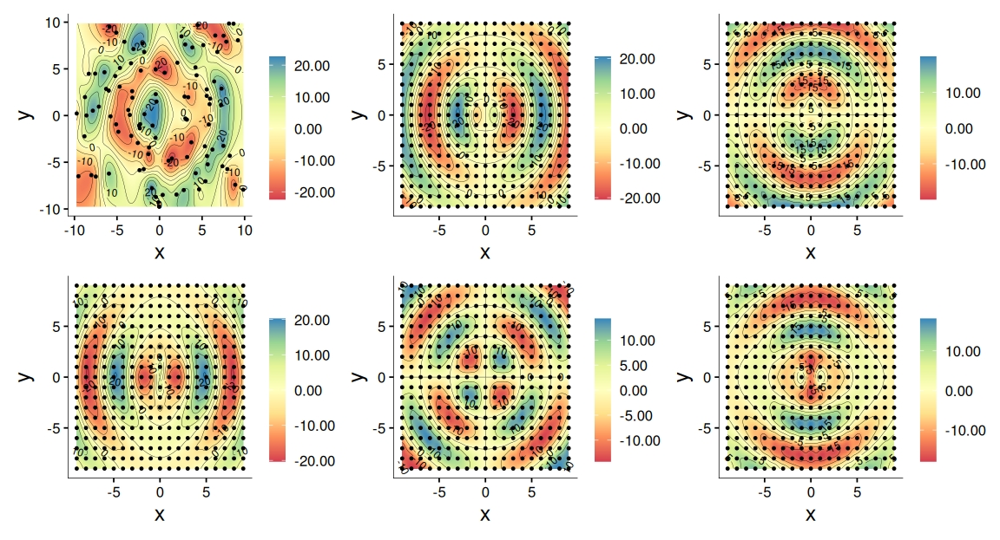
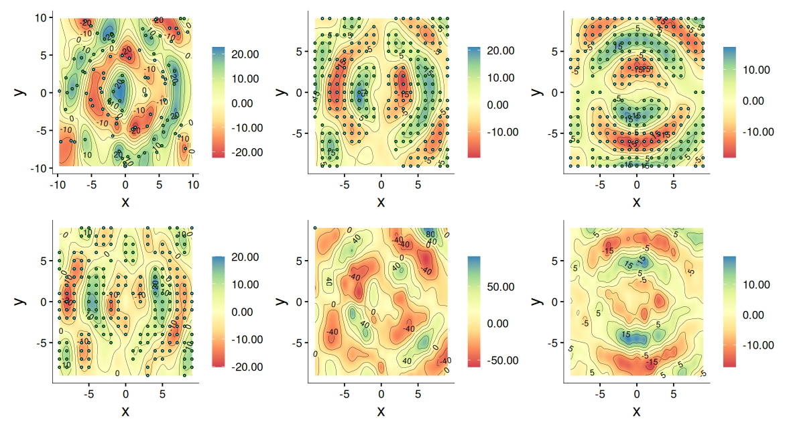
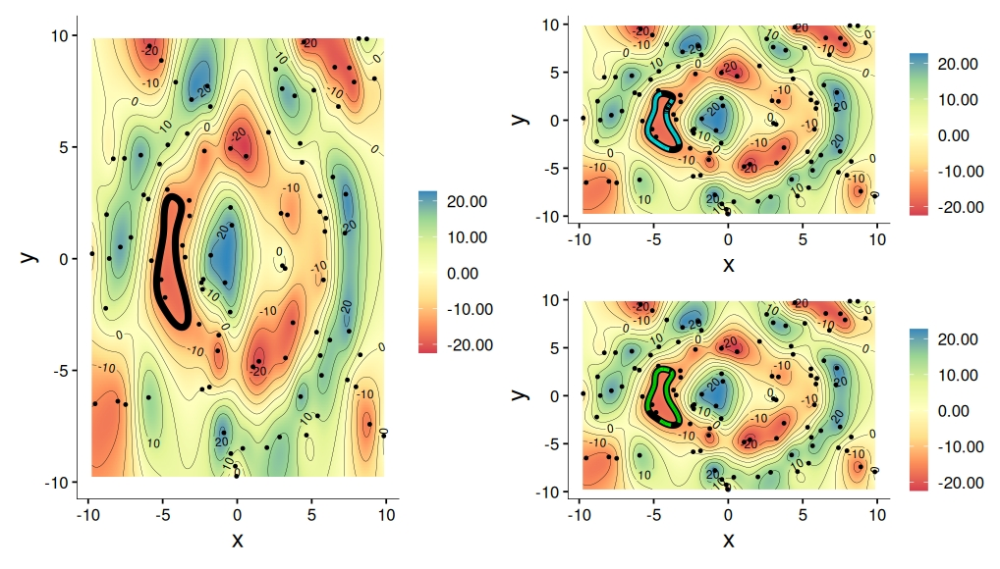
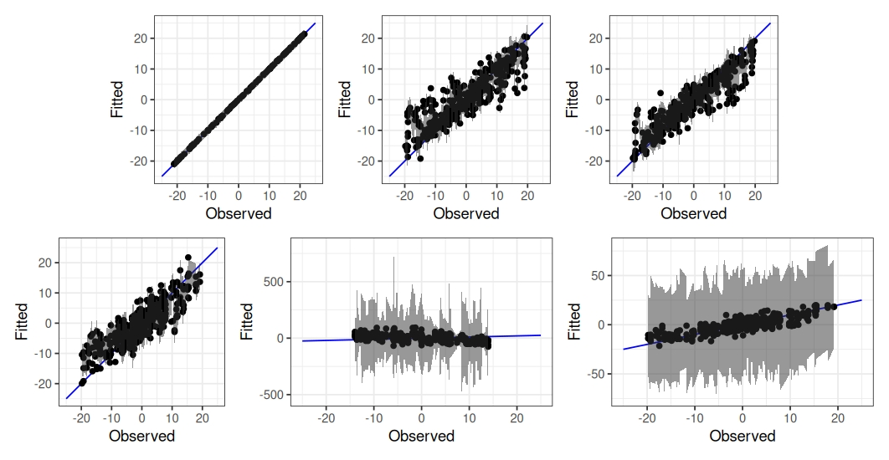
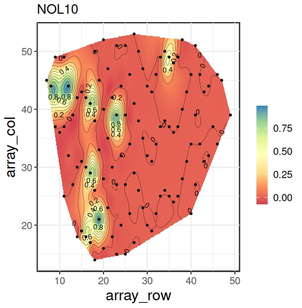
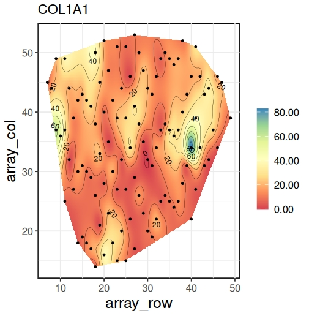
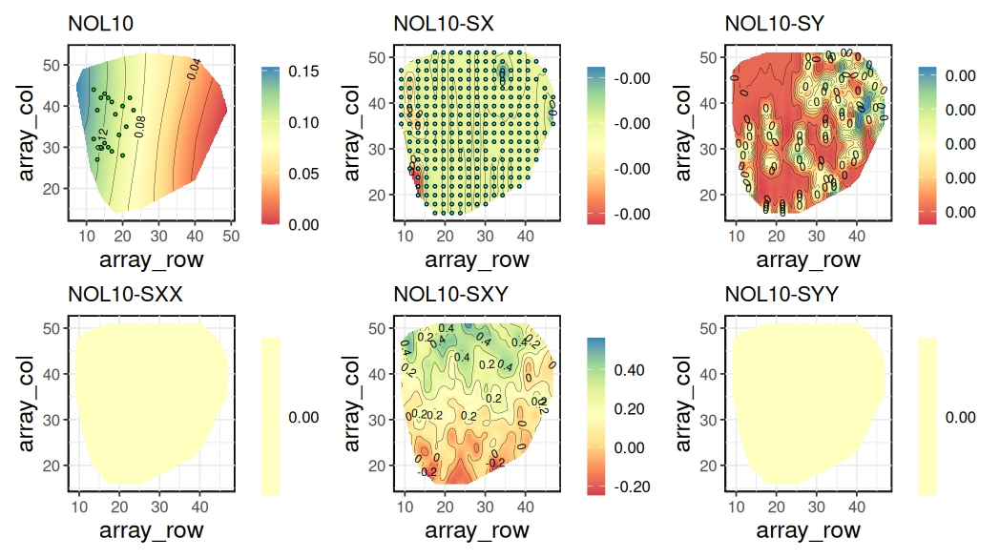
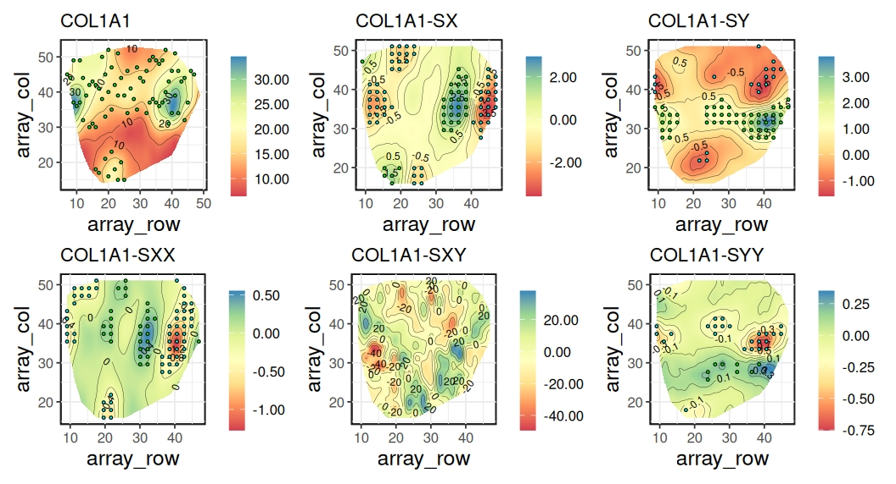
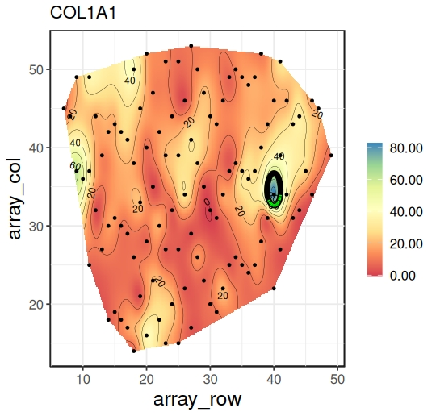
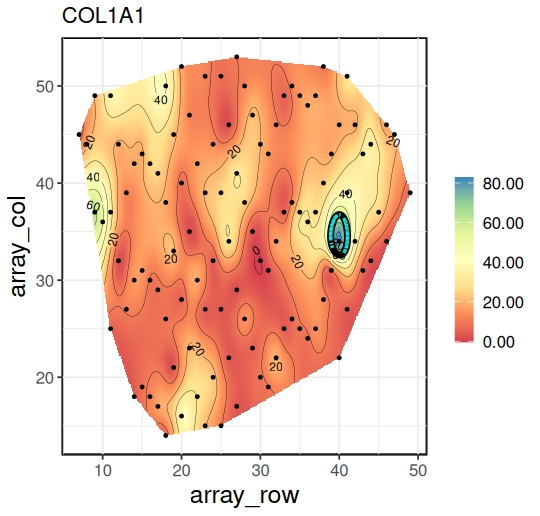

This exposition presents nimblewomble, a software package to perform wombling, or boundary analysis, using the nimble Bayesian hierarchical modeling language in the R statistical computing environment. Wombling is used widely to track regions of rapid change within the spatial reference domain. Specific functions in the package implement Gaussian process models for point-referenced spatial data followed by predictive inference on rates of change over curves using line integrals. We demonstrate model-based Bayesian inference using posterior distributions featuring simple analytic forms while offering uncertainty quantification over curves.
Detecting regions of rapid change is an important exercise in spatial data science as they harbor effects not easily explained by predictors incorporated into a spatial regression model for point-referenced spatial data. For example, environmental health scientists are often keen on identifying regions where exposure levels display rapid change or sharp gradients. Formal statistical detection of such regions can lead to data-driven discoveries of latent risk factors and other predictors that drive the rapid change in exposure surfaces. This exercise is referred to as wombling (Womble 1951; Gleyze et al. 2001; Banerjee 2010). Wombling results in curves that track regions of interest. Identifying such regions serves as crucial guides for interventions. For example, to determine whether natural features such as rivers or mountain ranges represent significant zones of rapid change in weather patterns; to identify significant boundaries (over geographic areas) in disease rates, such as cancer, or to track variations in access to health care across geographical regions. Measurement scales of the spatial data usually dictate the methods required for wombling. For areal data, boundaries delineate neighboring regions (see, e.g. Gao et al. 2023; Wu and Banerjee 2025). Predictive inference is sought for smooth curves. We evaluate spatial gradients along a curve while assessing its candidacy for a boundary (see, e.g., Banerjee and Gelfand 2006; Qu et al. 2021; Halder et al. 2024), which requires specifying the smoothness of the spatial process (see, e.g. Kent 1989; Banerjee et al. 2003).
In this software package, we are concerned with point-referenced wombling. Developing an easily accessible software that implements Bayesian wombling for use by the wider scientific community is faced with several challenges, perhaps the most severe being the need for two-dimensional quadrature to enable posterior inference. Our contributions here lie in the use of analytic closed forms for posteriors that require at most one-dimensional quadrature, greatly easing the computational burden and enabling efficient Bayesian inference for hierarchical spatial models (see, e.g. Banerjee et al. 2014) via nimble (Valpine et al. 2017) within the R (R Core Team 2021) statistical environment.
Several R packages exist for point-referenced spatial modeling, with spBayes (Finley et al. 2007) and R-INLA (Lindgren and Rue 2015) being more widely used. However, they do not address boundary analysis, or wombling, in any capacity. In recent years, nimble has found increased use in Bayesian modeling applications (see, e.g. Turek et al. 2016; Ponisio et al. 2020; Goldstein and Valpine 2022). Notable R-packages that use nimble include BayesNSGP (Risser and Turek 2020) and nimbleEcology (Goldstein et al. 2024). The Bayesian hierarchical framework in nimblewomble is similar to spBayes. We take advantage of the one-line call and execute feature of nimble to develop Markov Chain Monte Carlo (MCMC) algorithms for fitting Gaussian processes (GPs). This makes the underlying code for nimblewomble easily accessible and customizable for wider use.
We demonstrate our developments using the Matérn class of covariance
kernels (see, e.g., Abramowitz et al. 1988). They are a popular choice
in the literature for GPs (see, e.g., Rasmussen and Williams 2005). They
feature a fractal parameter that provides explicit control over process
smoothness. Our package offers three choices for the fractal parameter,
allowing for flexible process specification. Gradient estimation is done
on a grid. We show an example of generating an equally spaced grid.
Users can also specify a grid of their choice. Wombling requires a
curve; we use contours for that purpose. We demonstrate the procedure
for obtaining contours using the
raster package.
Alternatively, a curve of choice can also be used. Our vignettes show an
example that uses the locator() function. The user annotates points on
the interpolated surface and a smooth Bézier curve is generated for use.
Finally, posterior samples from models in
spBayes can also be
used for wombling with
nimblewomble. The
same kernel needs to be used in both packages to ensure valid inference.
The ensuing discussion describes the necessary methodological details in brief. We begin with a general overview of the functions within nimblewomble. 6 contains worked-out examples to demonstrate the workflow. 8 houses an application of the package to perform boundary analysis on a spatial transcriptomics dataset.
The nimblewomble
package is available for download on the Comprehensive R Archive Network
(CRAN). It contains functions that are required to perform wombling.
These functions are described in 1. The main functions can broadly
be classified into four categories: covariance kernels, model fitting,
inference on rates of change and line integrals, and graphical displays.
All functions, with the exception of plotting, are scripted as
nimbleFunctions with wrapper functions that are callable through
R. This enables fast execution using their compiled C++
counterparts. We generate spatial graphics using
ggplot2 (Wickham 2011)
and MBA (Finley 2024).
Other internal helper functions within the package serve specific
computational purposes, for example, the incomplete Gamma integral is
computed by gamma_int. They are primarily for internal use and are
described under the internal type (row subsections) within
1.
| Type | Function | Purpose | Description |
|---|---|---|---|
| Main | materncov1
materncov2
gaussian |
covariance kernel | Matérn covariance with \(\nu=\frac{3}{2}\), \(\frac{5}{2}\) and \(\infty\) (squared exponential kernel). |
gp_fit |
model fitting | Fits a Gaussian Process with non-informative priors. Produces posterior samples for \(\theta\). | |
zbeta_samples |
model fitting | Posterior samples for \(Z(s)\) and \(\beta\). | |
sprates |
inference | Posterior samples for \(\partial Z(s)\) and \(\partial^2 Z(s)\). | |
spwombling |
inference | Posterior samples for \(\Gamma(C)\). | |
sp_ggplot |
plotting | Interpolated spatial surface plots. | |
| Internal | significance |
– | Determines significance for posterior estimates. |
pnorm_nimble |
– | Computes the cumulative distribution function (CDF) for the standard Gaussian probability distribution. | |
gamma_int |
– | Incomplete Gamma Function. | |
gamma1.mcov1
gamma1ln2.gauss
gamma1ln2.mcov2 |
– | Cross-covariance terms for the posterior distribution of wombling measures. | |
gradients_matern1
curvatures_matern2
curvatures_gaussian |
– | Posterior samples of rates of change (gradients and curvatures) for various kernels. | |
wombling_matern1
wombling_matern2
wombling_gaussian |
– | Posterior samples for wombling measures for various kernels. | |
zbeta_matern1
zbeta_matern2
zbeta_gaussian |
– | Posterior samples of spatial effects and intercept for various kernels. | |
zXbeta |
– | Posterior samples of spatial effects and intercept in the presence of covariates. |
We consider \(\{Y(\boldsymbol{\mathbf{s}}): \boldsymbol{\mathbf{s}}\in\mathscr{S}\subseteq\mathfrak{R}^2\}\) to be a univariate weakly stationary random field with zero mean and a positive definite covariance \(K(\boldsymbol{\mathbf{s}}, \boldsymbol{\mathbf{s}}')= {\rm Cov}(Y(\boldsymbol{\mathbf{s}}), Y(\boldsymbol{\mathbf{s}}'))\) for locations \(\boldsymbol{\mathbf{s}}, \boldsymbol{\mathbf{s}}'\in \mathfrak{R}^2\). Mean square smoothness (see, e.g., Stein 1999) at an arbitrary location \(\boldsymbol{\mathbf{s}}_0\) requires \(Y(\boldsymbol{\mathbf{s}}_0+h\boldsymbol{\mathbf{u}}) = Y(\boldsymbol{\mathbf{s}}_0)+h\boldsymbol{\mathbf{u}}^{\mathrm{\scriptscriptstyle T} }\boldsymbol{\mathbf{\partial}} Y(\boldsymbol{\mathbf{s}}_0) + h^2 {\boldsymbol{\mathbf{u}}^{\otimes 2}}^{\mathrm{\scriptscriptstyle T} }\boldsymbol{\mathbf{\partial}}^{\otimes 2}Y(\boldsymbol{\mathbf{s}}_0) + o(h^3||\boldsymbol{\mathbf{u}}||^3)\), where, \(\boldsymbol{\mathbf{u}}=(u_1,u_2)^{\mathrm{\scriptscriptstyle T} }\in \mathfrak{R}^2\) is an arbitrary vector of directions, \(\boldsymbol{\mathbf{\partial}}\) is the gradient operator, \(\boldsymbol{\mathbf{\partial}} Y(\boldsymbol{\mathbf{s}}_0) = \left(\frac{\partial}{\partial s_x}Y(\boldsymbol{\mathbf{s}}_0),\frac{\partial}{\partial s_y}Y(\boldsymbol{\mathbf{s}}_0)\right)^{\mathrm{\scriptscriptstyle T} }=(\partial_xY(\boldsymbol{\mathbf{s}}_0), \partial_yY(\boldsymbol{\mathbf{s}}_0))^{\mathrm{\scriptscriptstyle T} }\), \(\otimes\) is the Kronecker vector product. Hence, \(\boldsymbol{\mathbf{u}}^{\otimes 2}= \left(u_1^2, u_1u_2, u_2u_1, u_2^2\right)^{\mathrm{\scriptscriptstyle T} }\) and \(\boldsymbol{\mathbf{\partial}}^{\otimes 2} = \boldsymbol{\mathbf{\partial}}\otimes \boldsymbol{\mathbf{\partial}}\). Note that \(\boldsymbol{\mathbf{\partial}}^{\otimes 2} Y(\boldsymbol{\mathbf{s}}_0)\) is the vectorized Hessian. The processes \(\boldsymbol{\mathbf{\partial}} Y(\boldsymbol{\mathbf{s}}_0)\) and \(\boldsymbol{\mathbf{\partial}}^{\otimes 2}Y(\boldsymbol{\mathbf{s}}_0)\) govern rates of change in \(Y(\boldsymbol{\mathbf{s}}_0)\). The gradient, or first-order rate of change, is captured by \(\boldsymbol{\mathbf{\partial}} Y(\boldsymbol{\mathbf{s}}_0)\) while curvature is captured by \(\boldsymbol{\mathbf{\partial}}^{\otimes 2}Y(\boldsymbol{\mathbf{s}}_0)\). Mean square differentiability (see Banerjee and Gelfand 2003) of the first and second order for \(Y(\boldsymbol{\mathbf{s}}_0)\) guarantees that \(\boldsymbol{\mathbf{u}}^{\mathrm{\scriptscriptstyle T} }\boldsymbol{\mathbf{\partial}} Y(\boldsymbol{\mathbf{s}}_0)\) and \((\boldsymbol{\mathbf{u}}\otimes\boldsymbol{\mathbf{v}})^{\mathrm{\scriptscriptstyle T} }\boldsymbol{\mathbf{\partial}}^{\otimes 2}Y(\boldsymbol{\mathbf{s}}_0)\) are well-defined respectively, for any set of direction vectors \(\boldsymbol{\mathbf{u}}, \boldsymbol{\mathbf{v}}\in \mathfrak{R}^2\). We note that the entries of \(\boldsymbol{\mathbf{\partial}}^{\otimes 2}Y(\boldsymbol{\mathbf{s}}_0)\) contain duplicates, both \(\partial^2_{xy}Y(\boldsymbol{\mathbf{s}}_0)=\frac{\partial^2}{\partial s_x\partial s_y}Y(\boldsymbol{\mathbf{s}}_0)\) and \(\partial^2_{yx}Y(\boldsymbol{\mathbf{s}}_0)\) are included. To avoid singularities that arise from duplication, we work with \(\widetilde{\boldsymbol{\mathbf{\partial}}}^{\otimes 2}Y(\boldsymbol{\mathbf{s}}_0)=\left(\partial_{xx}^2Y(\boldsymbol{\mathbf{s}}_0),\partial_{xy}^2Y(\boldsymbol{\mathbf{s}}_0), \partial_{yy}^2Y(\boldsymbol{\mathbf{s}}_0)\right)^{\mathrm{\scriptscriptstyle T} }\) comprised of only unique derivatives.
Statistical inference is devised for the joint process, \(\boldsymbol{\mathbf{\mathcal{L}}}^*Y(\boldsymbol{\mathbf{s}}) = \left(Y(\boldsymbol{\mathbf{s}}), \boldsymbol{\mathbf{\partial}} Y(\boldsymbol{\mathbf{s}})^{\mathrm{\scriptscriptstyle T} }, \widetilde{\boldsymbol{\mathbf{\partial}}}^{\otimes 2}Y(\boldsymbol{\mathbf{s}})^{\mathrm{\scriptscriptstyle T} }\right)^{\mathrm{\scriptscriptstyle T} }\). Note that in \(\mathfrak{R}^2\), \(\boldsymbol{\mathbf{\partial}} Y(\boldsymbol{\mathbf{s}})\) and \(\widetilde{\boldsymbol{\mathbf{\partial}}}^{\otimes 2}Y(\boldsymbol{\mathbf{s}})\) are \(2\times 1\) and \(3\times 1\) vectors respectively. Validity of the inference is considered at length in (Banerjee et al. 2003; Halder et al. 2024). The process \(\boldsymbol{\mathbf{\mathcal{L}}}^*Y(\boldsymbol{\mathbf{s}})\) is also weakly stationary with a cross-covariance matrix of order \(6\times 6\) given by,
\[\begin{equation} \label{eq:cross-cov} \boldsymbol{\mathbf{\mathrm{V}}}_{\boldsymbol{\mathbf{\mathcal{L}}}^*}(\boldsymbol{\mathbf{\Delta}}) =\left(\begin{array}{ccc} K(\boldsymbol{\mathbf{\Delta}}) & \boldsymbol{\mathbf{\partial}} K(\boldsymbol{\mathbf{\Delta}})^{\mathrm{\scriptscriptstyle T} } & \widetilde{\boldsymbol{\mathbf{\partial}}}^2 K(\boldsymbol{\mathbf{\Delta}})^{\mathrm{\scriptscriptstyle T} } \\ -\boldsymbol{\mathbf{\partial}} K(\boldsymbol{\mathbf{\Delta}}) & -\boldsymbol{\mathbf{\partial}}^2K(\boldsymbol{\mathbf{\Delta}}) & -\widetilde{\boldsymbol{\mathbf{\partial}}}^3K(\boldsymbol{\mathbf{\Delta}})^{\mathrm{\scriptscriptstyle T} }\\ \widetilde{\boldsymbol{\mathbf{\partial}}}^{2}K(\boldsymbol{\mathbf{\Delta}}) & \widetilde{\boldsymbol{\mathbf{\partial}}}^3K(\boldsymbol{\mathbf{\Delta}}) & \widetilde{\boldsymbol{\mathbf{\partial}}}^4K(\boldsymbol{\mathbf{\Delta}}) \end{array}\right), \end{equation} \tag{1}\] where \(\boldsymbol{\mathbf{\Delta}}= \boldsymbol{\mathbf{s}}-\boldsymbol{\mathbf{s}}'\), \(\boldsymbol{\mathbf{\partial}} K(\boldsymbol{\mathbf{\Delta}})\) is a \(2\times 1\) vector of gradients, \(\widetilde{\boldsymbol{\mathbf{\partial}}}^2K(\boldsymbol{\mathbf{\Delta}})\) is a \(3\times 1\) vector of unique curvatures, \(\widetilde{\boldsymbol{\mathbf{\partial}}}^3K(\boldsymbol{\mathbf{\Delta}})\) is a \(3\times 2\) matrix of third derivatives, \(\boldsymbol{\mathbf{\partial}}^2K(\boldsymbol{\mathbf{\Delta}})\) is the \(2\times 2\) Hessian and \(\widetilde{\boldsymbol{\mathbf{\partial}}}^4K(\boldsymbol{\mathbf{\Delta}})\) is a \(3\times 3\) matrix of fourth-order derivatives. Evidently, for \(\boldsymbol{\mathbf{\mathrm{V}}}_{\boldsymbol{\mathbf{\mathcal{L}}}^*}(\boldsymbol{\mathbf{\Delta}})\) in (1) to be valid all entries need to be well-defined.
Let \(Y(\boldsymbol{\mathbf{s}})\sim GP(0, K(\cdot;\boldsymbol{\mathbf{\theta}}))\) denote a Gaussian process (GP) where \(K(\boldsymbol{\mathbf{\Delta}};\boldsymbol{\mathbf{\theta}})= {\rm Cov}(Y(\boldsymbol{\mathbf{s}}), Y(\boldsymbol{\mathbf{s}}'))\) with process parameters \(\boldsymbol{\mathbf{\theta}}= \{\sigma^2, \phi\}\). We will denote \(K(\boldsymbol{\mathbf{\Delta}};\boldsymbol{\mathbf{\theta}})=K(\boldsymbol{\mathbf{\Delta}})\) to ease notation. The covariance function satisfies \(\sum_{i=1}^{N}\sum_{j=1}^{N}a_ia_jK(\boldsymbol{\mathbf{\Delta}}_{ij})>0\) for any collection of coordinates \(\{\boldsymbol{\mathbf{s}}_i:i = 1,\ldots,N\}\). Under isotropy we have \(K(\boldsymbol{\mathbf{\Delta}})=\widetilde{K}(||\boldsymbol{\mathbf{\Delta}}||)\). Let \(\boldsymbol{\mathbf{\mathcal{Y}}}= \left(y(\boldsymbol{\mathbf{s}}_1), \ldots, y(\boldsymbol{\mathbf{s}}_N)\right)^{\mathrm{\scriptscriptstyle T} }\) be the observed realization over \(\mathscr{S}\), \(\Sigma_\boldsymbol{\mathbf{\mathcal{Y}}}\) be the \(N\times N\) covariance matrix with entries \(K(\boldsymbol{\mathbf{s}}_i,\boldsymbol{\mathbf{s}}_j)\), \(i, j = 1, \ldots, N\) and \(\boldsymbol{\mathbf{s}}_0\) an arbitrary location of interest. The joint distribution is as follows:
\[\begin{equation} \label{eq:joint} \boldsymbol{\mathbf{\mathcal{Y}}}, \boldsymbol{\mathbf{\partial}} Y(\boldsymbol{\mathbf{s}}_0), \widetilde{\boldsymbol{\mathbf{\partial}}}^2Y(\boldsymbol{\mathbf{s}}_0)\, | \;\boldsymbol{\mathbf{\theta}}\sim \mathcal{N}_{N+5}\left(\boldsymbol{\mathbf{0}}_{N+5},\left(\begin{array}{ccc} \Sigma_\boldsymbol{\mathbf{\mathcal{Y}}}& \boldsymbol{\mathbf{\mathrm{K}}}_1 & \boldsymbol{\mathbf{\mathrm{K}}}_2\\ -\boldsymbol{\mathbf{\mathrm{K}}}_1^{\mathrm{\scriptscriptstyle T} } & -\boldsymbol{\mathbf{\partial}}^2 K(\boldsymbol{\mathbf{0}}) & -\widetilde{\boldsymbol{\mathbf{\partial}}}^3K(\boldsymbol{\mathbf{0}})^{\mathrm{\scriptscriptstyle T} }\\ \boldsymbol{\mathbf{\mathrm{K}}}_2^{\mathrm{\scriptscriptstyle T} } & \widetilde{\boldsymbol{\mathbf{\partial}}}^3K(\boldsymbol{\mathbf{0}}) & \widetilde{\boldsymbol{\mathbf{\partial}}}^4K(\boldsymbol{\mathbf{0}}) \end{array}\right)\right), \end{equation} \tag{2}\] where, \(\mathcal{N}_d\) denotes the \(d\)-variate Gaussian distribution, \(\boldsymbol{\mathbf{\mathrm{K}}}_1 = \left(\boldsymbol{\mathbf{\partial}} K(\delta_{10})^{\mathrm{\scriptscriptstyle T} },\ldots,\boldsymbol{\mathbf{\partial}} K(\delta_{N0})^{\mathrm{\scriptscriptstyle T} }\right)^{\mathrm{\scriptscriptstyle T} }\), \(\boldsymbol{\mathbf{\mathrm{K}}}_2 = \left(\widetilde{\boldsymbol{\mathbf{\partial}}}^2 K(\delta_{10})^{\mathrm{\scriptscriptstyle T} },\ldots,\widetilde{\boldsymbol{\mathbf{\partial}}}^2 K(\delta_{N0})^{\mathrm{\scriptscriptstyle T} }\right)^{\mathrm{\scriptscriptstyle T} }\) and \(\delta_{i0} =\boldsymbol{\mathbf{s}}_i-\boldsymbol{\mathbf{s}}_0\), \(i = 1, \ldots, N\). The resulting posterior predictive distribution for rates of change at \(\boldsymbol{\mathbf{s}}_0\) is \(P(\boldsymbol{\mathbf{\partial}} Y(\boldsymbol{\mathbf{s}}_0),\widetilde{\boldsymbol{\mathbf{\partial}}}^2Y(\boldsymbol{\mathbf{s}}_0)\, | \;\boldsymbol{\mathbf{\mathcal{Y}}}) = \int P(\boldsymbol{\mathbf{\partial}} Y(\boldsymbol{\mathbf{s}}_0),\widetilde{\boldsymbol{\mathbf{\partial}}}^2Y(\boldsymbol{\mathbf{s}}_0)\, | \;\boldsymbol{\mathbf{\mathcal{Y}}},\boldsymbol{\mathbf{\theta}})\; P(\boldsymbol{\mathbf{\theta}}\, | \;\boldsymbol{\mathbf{\mathcal{Y}}})\;d\boldsymbol{\mathbf{\theta}}\). Posterior sampling proceeds in a one-for-one fashion corresponding to posterior samples of \(\boldsymbol{\mathbf{\theta}}\). From (2) the resulting full conditional distribution is obtained as follows: \[\begin{equation} \label{eq:posterior_gradient} \left(\begin{array}{c} \boldsymbol{\mathbf{\partial}} Y(\boldsymbol{\mathbf{s}}_0) \\ \widetilde{\boldsymbol{\mathbf{\partial}}}^2Y(\boldsymbol{\mathbf{s}}_0) \end{array}\right)\, | \;\boldsymbol{\mathbf{\mathcal{Y}}}\sim\mathcal{N}_5\left(-\left(\begin{array}{c} \boldsymbol{\mathbf{\mathrm{K}}}_1 \\ \boldsymbol{\mathbf{\mathrm{K}}}_2 \end{array}\right)^{\mathrm{\scriptscriptstyle T} }\Sigma_\boldsymbol{\mathbf{\mathcal{Y}}}^{-1}\boldsymbol{\mathbf{\mathcal{Y}}}, \left(\begin{array}{cc} -\boldsymbol{\mathbf{\partial}}^2 K(\boldsymbol{\mathbf{0}}) & -\widetilde{\boldsymbol{\mathbf{\partial}}}^3K(\boldsymbol{\mathbf{0}})^{\mathrm{\scriptscriptstyle T} } \\ \widetilde{\boldsymbol{\mathbf{\partial}}}^3K(\boldsymbol{\mathbf{0}}) & \widetilde{\boldsymbol{\mathbf{\partial}}}^4K(\boldsymbol{\mathbf{0}}) \end{array}\right)-\left(\begin{array}{c} \boldsymbol{\mathbf{\mathrm{K}}}_1 \\ \boldsymbol{\mathbf{\mathrm{K}}}_2 \end{array}\right)^{\mathrm{\scriptscriptstyle T} }\Sigma_\boldsymbol{\mathbf{\mathcal{Y}}}^{-1}\left(\begin{array}{c} \boldsymbol{\mathbf{\mathrm{K}}}_1 \\ \boldsymbol{\mathbf{\mathrm{K}}}_2 \end{array}\right)\right). \end{equation} \tag{3}\] We use the Matérn class of kernels, \(K(||\boldsymbol{\mathbf{\Delta}}||,\boldsymbol{\mathbf{\theta}}) = \sigma^2\Gamma(\nu)^{-1}2^{1-\nu}\left(\sqrt{2\nu}\phi||\boldsymbol{\mathbf{\Delta}}||\right)^\nu K_\nu\left(\sqrt{2\nu}\phi||\boldsymbol{\mathbf{\Delta}}||\right)\), where \(K_\nu(\cdot)\) is the modified Bessel function of the second kind (Abramowitz et al. 1988) featuring a fractal parameter \(\nu\) that controls process smoothness, a spatial range parameter \(\phi\) and an overall variance parameter \(\sigma^2\).
The wombling exercise seeks posterior predictive inference on line integrals \[\begin{equation} \label{eq:wombling_measures} \boldsymbol{\mathbf{\Gamma}}(C) = \left(\int_C \boldsymbol{\mathbf{u}}^{\mathrm{\scriptscriptstyle T} }\boldsymbol{\mathbf{\partial}} Y(\boldsymbol{\mathbf{s}})\;d\boldsymbol{\mathbf{s}}, \int_C{\boldsymbol{\mathbf{u}}^{\otimes 2}}^{\mathrm{\scriptscriptstyle T} }\boldsymbol{\mathbf{\partial}}^{\otimes 2} Y(\boldsymbol{\mathbf{s}})\;d\boldsymbol{\mathbf{s}}\right)^{\mathrm{\scriptscriptstyle T} }, \end{equation} \tag{4}\] where \(C\) is a curve of interest to the investigator. Average wombling measures are defined as \(\overline{\boldsymbol{\mathbf{\Gamma}}}(C) = \boldsymbol{\mathbf{\Gamma}}(C)/\ell(C)\), where \(\ell\) is the arc-length measure. For closed curves we replace \(\int\) with \(\oint\) in (4). The choice of direction is crucial when measuring rates of change. The curve \(C\) typically tracks a region of rapid change in the reference domain and hence, the direction normal to \(C\) is naturally of interest. We denote the normal to \(C\) at \(\boldsymbol{\mathbf{s}}\) by \(\boldsymbol{\mathbf{n}}(\boldsymbol{\mathbf{s}})\) and set \(\boldsymbol{\mathbf{u}}= \boldsymbol{\mathbf{n}}(\boldsymbol{\mathbf{s}})\) in the line integrals of (4). The curve \(C\) is deemed to be a wombling boundary if any entry of \(\boldsymbol{\mathbf{\Gamma}}(C)\) is large. Focusing on the choices for \(C\), not all curves ensure the existence of \(\boldsymbol{\mathbf{n}}(\boldsymbol{\mathbf{s}})\) at every \(\boldsymbol{\mathbf{s}}\). Parametric smooth curves offer some respite in that regard. We work with \(C = \{\boldsymbol{\mathbf{s}}(t) = (s_1(t), s_2(t)):t \in\mathcal{I}\subset \mathfrak{R}\}\). As \(t\) varies over \(\mathcal{I}\), \(\boldsymbol{\mathbf{s}}(t)\) traces out \(C\). We assume \(||\boldsymbol{\mathbf{s}}'(t)||\ne0\) which ensures \(\boldsymbol{\mathbf{n}}(\boldsymbol{\mathbf{s}})=||\boldsymbol{\mathbf{s}}'(t)||^{-1}\left(s_2'(t), -s_1'(t)\right)^{\mathrm{\scriptscriptstyle T} }\) is well-defined.
The arc-length, \(\ell(C) = \int_\mathcal{I}||\boldsymbol{\mathbf{s}}'(t)||\;dt\). For parametric curves \(\boldsymbol{\mathbf{\Gamma}}(C)\) can be expressed as, \(\boldsymbol{\mathbf{\Gamma}}(C) = \left(\int_\mathcal{I}\boldsymbol{\mathbf{n}}(\boldsymbol{\mathbf{s}}(t))^{\mathrm{\scriptscriptstyle T} }\boldsymbol{\mathbf{\partial}} Y(\boldsymbol{\mathbf{s}}(t))||\boldsymbol{\mathbf{s}}'(t)||\;dt, \int_\mathcal{I}{\boldsymbol{\mathbf{n}}(\boldsymbol{\mathbf{s}}(t))^{\otimes 2}}^{\mathrm{\scriptscriptstyle T} }\boldsymbol{\mathbf{\partial}}^{\otimes 2} Y(\boldsymbol{\mathbf{s}}(t))||\boldsymbol{\mathbf{s}}'(t)||\;dt\right)^{\mathrm{\scriptscriptstyle T} }\). Let \(\mathcal{I}= [0,t^*]\), and the curve traced out over \(\mathcal{I}\) be denoted as \(C_{t^*}\). Statistical inference for \(\boldsymbol{\mathbf{\Gamma}}(C_{t^*})\) follows from \(\boldsymbol{\mathbf{\partial}} Y(\boldsymbol{\mathbf{s}})\) and \(\widetilde{\boldsymbol{\mathbf{\partial}}}^2Y(\boldsymbol{\mathbf{s}})\) being GPs, as seen in (3), \(\boldsymbol{\mathbf{\Gamma}}(C_{t^*})\sim\mathcal{N}_2(\boldsymbol{\mathbf{0}}_2, \boldsymbol{\mathbf{\mathrm{K}}}_\boldsymbol{\mathbf{\Gamma}}(t^*,t^*))\), where \(\boldsymbol{\mathbf{\mathrm{K}}}_\boldsymbol{\mathbf{\Gamma}}(t^*,t^*)\) is a \(2\times 2\) matrix with entries \[\begin{equation} \label{eq:variance_wm} k_{ij}(t^*,t^*)= (-1)^i\int_0^{t^*}\int_0^{t^*}\boldsymbol{\mathbf{a}}_i(t_1)^{\mathrm{\scriptscriptstyle T} }\;\boldsymbol{\mathbf{\partial}}^{i+j}K(\boldsymbol{\mathbf{\Delta}}(t_1,t_2))\;\boldsymbol{\mathbf{a}}_j(t_2)\;||\boldsymbol{\mathbf{s}}'(t_1)||\;||\boldsymbol{\mathbf{s}}'(t_2)||\;dt_1\;dt_2, \end{equation} \tag{5}\] where \(\boldsymbol{\mathbf{a}}_1(t)=\boldsymbol{\mathbf{n}}(\boldsymbol{\mathbf{s}}(t))\), \(\boldsymbol{\mathbf{a}}_2(t)=\mathcal{E}_2\;\boldsymbol{\mathbf{n}}(\boldsymbol{\mathbf{s}}(t))^{\otimes 2}\), with \(\mathcal{E}_2= \left(\begin{smallmatrix} 1 & & & \\ & 1 & 1 & \\ & & & 1 \end{smallmatrix}\right)\) being an elimination matrix and \(\boldsymbol{\mathbf{\Delta}}(t_1,t_2)=\boldsymbol{\mathbf{s}}_2(t)-\boldsymbol{\mathbf{s}}_1(t)\) for \(i,j = 1,2\). Predictive inference on \(\boldsymbol{\mathbf{\Gamma}}(C)\) requires \[\begin{equation} \label{eq:joint-wm} \boldsymbol{\mathbf{\mathcal{Y}}}, \boldsymbol{\mathbf{\Gamma}}(C_{t^*})\, | \;\boldsymbol{\mathbf{\theta}}\sim \mathcal{N}_{N+2}\left(\boldsymbol{\mathbf{0}}_{N+2},\left(\begin{array}{cc} \Sigma_\boldsymbol{\mathbf{\mathcal{Y}}}& \boldsymbol{\mathbf{\mathscr{G}}}_\boldsymbol{\mathbf{\Gamma}}(t^*)^{\mathrm{\scriptscriptstyle T} } \\ \boldsymbol{\mathbf{\mathscr{G}}}_\boldsymbol{\mathbf{\Gamma}}(t^*) & \boldsymbol{\mathbf{\mathrm{K}}}_\boldsymbol{\mathbf{\Gamma}}(t^*, t^*) \end{array}\right)\right), \end{equation} \tag{6}\] where \(\boldsymbol{\mathbf{\mathscr{G}}}_\boldsymbol{\mathbf{\Gamma}}(t^*)^{\mathrm{\scriptscriptstyle T} }=\left(\begin{smallmatrix}\boldsymbol{\mathbf{\Gamma}}_1(t^*)^{\mathrm{\scriptscriptstyle T} } \\ \vdots \\\boldsymbol{\mathbf{\Gamma}}_N(t^*)^{\mathrm{\scriptscriptstyle T} }\end{smallmatrix}\right)\) is an \(N\times 2\) matrix with entries \[\begin{equation} \label{eq:cross-cov-wm} \gamma_i(t^*)=\left(\int_0^{t^*}\boldsymbol{\mathbf{n}}(\boldsymbol{\mathbf{s}}(t))^{\mathrm{\scriptscriptstyle T} } \boldsymbol{\mathbf{\partial}} K(\boldsymbol{\mathbf{\Delta}}_j(t))\;||\boldsymbol{\mathbf{s}}'(t)||\;dt, \int_0^{t^*}{\boldsymbol{\mathbf{n}}(\boldsymbol{\mathbf{s}}(t))^{\otimes 2}}^{\mathrm{\scriptscriptstyle T} } \boldsymbol{\mathbf{\partial}}^{\otimes 2} K(\boldsymbol{\mathbf{\Delta}}_j(t))\;||\boldsymbol{\mathbf{s}}'(t)||\;dt\right)^{\mathrm{\scriptscriptstyle T} }, \end{equation} \tag{7}\] where \(\boldsymbol{\mathbf{\Delta}}_j(t) = \boldsymbol{\mathbf{s}}(t) - \boldsymbol{\mathbf{s}}_j\). Posterior predictive inference proceeds one-for-one (similar to (3)) using \(\boldsymbol{\mathbf{\Gamma}}(C_{t^*})\, | \;\boldsymbol{\mathbf{\mathcal{Y}}}\sim \mathcal{N}_2\left(-\boldsymbol{\mathbf{\mathscr{G}}}_\boldsymbol{\mathbf{\Gamma}}(t^*)\Sigma_\boldsymbol{\mathbf{\mathcal{Y}}}^{-1}\boldsymbol{\mathbf{\mathcal{Y}}}, \boldsymbol{\mathbf{\mathrm{K}}}_\boldsymbol{\mathbf{\Gamma}}(t^*, t^*) - \boldsymbol{\mathbf{\mathscr{G}}}_\boldsymbol{\mathbf{\Gamma}}(t^*)\Sigma_\boldsymbol{\mathbf{\mathcal{Y}}}^{-1}\boldsymbol{\mathbf{\mathscr{G}}}_\boldsymbol{\mathbf{\Gamma}}(t^*)^{\mathrm{\scriptscriptstyle T} }\right)\).
In practice, modern computing environments store curves as a set of points. As a result, it suffices to demonstrate wombling for rectilinear approximations to smooth curves where predictive inference is performed iteratively on segments. We show the inference for one generic segment. Let \(C =\{\boldsymbol{\mathbf{s}}(t_0), \boldsymbol{\mathbf{s}}(t_1), \ldots, \boldsymbol{\mathbf{s}}(t_{n_p})\}\), then the \(i\)-th segment, \(C_{t_i}=\{\boldsymbol{\mathbf{s}}(t) = \boldsymbol{\mathbf{s}}(t_{i-1})+t\boldsymbol{\mathbf{u}}_i:t\in[0,t_i]\}\), \(t_i = ||\boldsymbol{\mathbf{s}}(t_i)-\boldsymbol{\mathbf{s}}(t_{i-1})||\) and \(\boldsymbol{\mathbf{u}}_i = t_i^{-1}(\boldsymbol{\mathbf{s}}(t_i)-\boldsymbol{\mathbf{s}}(t_{i-1}))\). Clearly, \(||\boldsymbol{\mathbf{u}}_i||=1\), \(||\boldsymbol{\mathbf{s}}'(t)||=1\) and the normal to \(C_{t_i}\) is \(\boldsymbol{\mathbf{u}}_i^{\perp}=(u_{i2},-u_{i1})^{\mathrm{\scriptscriptstyle T} }\). For predictive inference on \(\boldsymbol{\mathbf{\Gamma}}(C_{t_i})\), note that we need \(\boldsymbol{\mathbf{\Delta}}(t_1, t_2)=(t_2-t_1)\boldsymbol{\mathbf{u}}_i\) in (5) and \(\boldsymbol{\mathbf{\Delta}}_j(t)=\boldsymbol{\mathbf{\Delta}}_{i-1,j}+t\boldsymbol{\mathbf{u}}_i=(\boldsymbol{\mathbf{s}}_{i-1}-\boldsymbol{\mathbf{s}}_j) + t\boldsymbol{\mathbf{u}}_{i-1}\) in (7).
We acknowledge that (5) requires 2-dimensional
quadrature, which is computationally expensive to evaluate. We work with
the Matérn kernel for which closed-form analytic expressions exist for
the entries of
\(\boldsymbol{\mathbf{\mathrm{K}}}_\boldsymbol{\mathbf{\Gamma}}(t^*,t^*)\)
improving on (Banerjee and Gelfand 2006; Halder et al. 2024) (see
Theorems 1 & 2 in the Supplement). Apart from reduced computation time
resulting from the reduction of a surface integral to closed-form
expressions, the Matérn class is uniquely suited for wombling, featuring
a dedicated fractal parameter that controls process smoothness and
thereby guaranteeing validity of posterior inference on derivatives and
line integrals (see, e.g., Halder et al. 2024). Our R-package,
nimblewomble features Matérn kernels with
\(\nu = \frac{3}{2}, \frac{5}{2}\) and \(\infty\) (squared exponential).

A Bayesian hierarchical model is specified as follows: \[\begin{equation} \label{eq:bhm} Y(\boldsymbol{\mathbf{s}}) = \mu(\boldsymbol{\mathbf{s}}, \boldsymbol{\mathbf{\beta}})+Z(\boldsymbol{\mathbf{s}})+\epsilon(\boldsymbol{\mathbf{s}}), \end{equation} \tag{8}\] where \(\mu(\boldsymbol{\mathbf{s}},\boldsymbol{\mathbf{\beta}})=\boldsymbol{\mathbf{x}}x(\boldsymbol{\mathbf{s}})^{\mathrm{\scriptscriptstyle T} }\boldsymbol{\mathbf{\beta}}\), \(Z(\boldsymbol{\mathbf{s}})\sim GP(0,K(\cdot;\sigma^2,\phi))\) and \(\epsilon(\boldsymbol{\mathbf{s}})\) is a white noise process (i.e., \(\epsilon(\boldsymbol{\mathbf{s}}_i) \overset{iid}{\sim} N(0, \tau^2)\) over any finite collection of locations). The process parameters are \(\boldsymbol{\mathbf{\theta}}=\{\sigma^2, \phi, \tau^2\}\). Predictive inference for \(\boldsymbol{\mathbf{\mathcal{L}}}^*Z(\boldsymbol{\mathbf{s}})\) evaluates \(P(\boldsymbol{\mathbf{\partial}} Z(\boldsymbol{\mathbf{s}})^{\mathrm{\scriptscriptstyle T} }, \widetilde{\boldsymbol{\mathbf{\partial}}}^2Z(\boldsymbol{\mathbf{s}})^{\mathrm{\scriptscriptstyle T} }\, | \;\boldsymbol{\mathbf{\mathcal{Y}}})=\int P(\boldsymbol{\mathbf{\partial}} Z(\boldsymbol{\mathbf{s}})^{\mathrm{\scriptscriptstyle T} }, \widetilde{\boldsymbol{\mathbf{\partial}}}^2Z(\boldsymbol{\mathbf{s}})^{\mathrm{\scriptscriptstyle T} }\, | \;\boldsymbol{\mathbf{\mathcal{Z}}},\boldsymbol{\mathbf{\theta}})\; P(\boldsymbol{\mathbf{\mathcal{Z}}}\, | \;\boldsymbol{\mathbf{\mathcal{Y}}},\boldsymbol{\mathbf{\theta}})\; P(\boldsymbol{\mathbf{\theta}}\, | \;\boldsymbol{\mathbf{\mathcal{Y}}})\;d\boldsymbol{\mathbf{\theta}}\;d\boldsymbol{\mathbf{\mathcal{Z}}}\). Similarly for the wombling measures, \(P(\boldsymbol{\mathbf{\Gamma}}_\boldsymbol{\mathbf{\mathcal{Z}}}(C_{t^*})\, | \;\boldsymbol{\mathbf{\mathcal{Y}}})=\int P(\boldsymbol{\mathbf{\Gamma}}_\boldsymbol{\mathbf{\mathcal{Z}}}(C_{t^*})\, | \;\boldsymbol{\mathbf{\mathcal{Z}}},\boldsymbol{\mathbf{\theta}})\;P(\boldsymbol{\mathbf{\mathcal{Z}}}\, | \;\boldsymbol{\mathbf{\mathcal{Y}}},\boldsymbol{\mathbf{\theta}})\;P(\boldsymbol{\mathbf{\theta}}\, | \;\boldsymbol{\mathbf{\mathcal{Y}}})\;d\boldsymbol{\mathbf{\theta}}\;d\boldsymbol{\mathbf{\mathcal{Z}}}\). A customary collapsed posterior, that is generated by marginalizing \(\boldsymbol{\mathbf{\mathcal{Z}}}\) from the likelihood (see, e.g. Finley et al. 2019), for \(\boldsymbol{\mathbf{\theta}}\) is specified as follows: \[\begin{equation} \label{eq:full_posterior} P(\boldsymbol{\mathbf{\theta}}\, | \;\boldsymbol{\mathbf{\mathcal{Y}}})\propto U(\phi\, | \;a_\phi,b_\phi)\times IG(\sigma^2\, | \;a_\sigma,b_\sigma)\times IG(\tau^2\, | \;a_\tau,b_\tau)\times \mathcal{N}_N(\boldsymbol{\mathbf{\mathcal{Y}}}\, | \;\boldsymbol{\mathbf{\mathrm{X}}}x\boldsymbol{\mathbf{\beta}}, \Sigma +\tau^2\boldsymbol{\mathbf{\mathrm{I}}}I_N), \end{equation} \tag{9}\] where \(\Sigma = \sigma^2\boldsymbol{\mathbf{\mathrm{R}}}_\boldsymbol{\mathbf{\mathcal{Z}}}(\phi)\), with \(\boldsymbol{\mathbf{\mathrm{R}}}_\boldsymbol{\mathbf{\mathcal{Z}}}(\phi)\) being the correlation matrix corresponding to \(K(\cdot;\sigma^2,\phi)\), \(U(\cdot\, | \;)\) is the uniform distribution and \(IG(\cdot\, | \;)\) is the inverse-gamma distribution. Hyper-parameters are chosen such that a weakly informative prior is specified on \(\boldsymbol{\mathbf{\theta}}\). Posterior samples for \(\boldsymbol{\mathbf{\mathcal{Z}}}\) and \(\boldsymbol{\mathbf{\beta}}\) are generated one-for-one corresponding to posterior samples of \(\boldsymbol{\mathbf{\theta}}\) using a Gibbs sampling scheme.
Posterior sampling in (9) is straightforward in
nimbleCode as seen in the code for gp_model below, which forms the
core of our gp_fit function (see 1). We use hyper-parameter
settings that result in weakly informative inverse gamma priors for
\(\sigma^2\) and \(\tau^2\). We take advantage of the one-line call and
execute feature of nimble using the buildMCMC and runMCMC
functions to obtain posterior samples from (9)
thereby, fitting (8).
#################################
# Collapsed Metropolis-Hastings #
# for covariance parameters #
#################################
gp_model <- nimbleCode({
# Priors #
phi ~ dunif(0, 10)
sigma2 ~ dinvgamma(shape = 1, rate = 1)
tau2 ~ dinvgamma(shape = 2, rate = 1)
# Initialization #
mu[1:N] <- zeros[1:N] # vector of 0s
cov[1:N, 1:N] <- kernel(dists[1:N, 1:N], phi, sigma2, tau2)
# Likelihood #
y[1:N] ~ dmnorm(mu[1:N], cov = cov[1:N, 1:N])
})Note that for different choices kernel is replaced with the
corresponding kernel choice in 1.
nimblewomble
We detail the workflow for nimblewomble using simulated data. We
produce data using patterns that yield closed-form expressions for rates
of change. This helps calibrate the predictive performance of
nimblewomble. We generate \(N=100\) observations over
\([-10, 10] \times[-10, 10]\subseteq \mathfrak{R}^2\) arising from,
\(y(\boldsymbol{\mathbf{s}})\sim \mathcal{N}_1\left(\mu_0(\boldsymbol{\mathbf{s}}) = 20\sin||\boldsymbol{\mathbf{s}}||, \tau^2\right)\).
We set \(\tau^2 = 1\). Here, the true values of gradients are available in
closed form. For example,
\(\partial_x \mu_0(\boldsymbol{\mathbf{s}}_G)=20\cos||\boldsymbol{\mathbf{s}}_G||\;s_{x,G}\;||\boldsymbol{\mathbf{s}}_G||^{-1}\),
where
\(\boldsymbol{\mathbf{s}}_G =(s_{x,G}, s_{y,G})\)
lies on a grid overlaid on the domain of reference (in this case:
\([-10,10]\times[-10, 10]\)). Other gradient and curvature processes are
computed similarly by differentiating
\(\mu_0(\boldsymbol{\mathbf{s}})\). Running the
following code generates the simulated data and produces plots in
1.
set.seed(1)
# Generating Simulated Data
N = 1e2
tau = 1
coords = matrix(runif(2 * N, -10, 10), ncol = 2); colnames(coords) = c("x", "y")
y = rnorm(N, mean = 20 * sin(sqrt(coords[, 1]^2 + coords[, 2]^2)), sd = tau)
# Create equally spaced grid of points
xsplit = ysplit = seq(-10, 10, by = 1)[-c(1, 21)]
grid = as.matrix(expand.grid(xsplit, ysplit), ncol = 2)
colnames(grid) = c("x", "y")
####################################
# Process for True Rates of Change #
####################################
# Gradient along x
true_sx = round(20 * cos(sqrt(grid[,1]^2 + grid[,2]^2)) *
grid[,1]/sqrt(grid[,1]^2 + grid[,2]^2), 3)
# Gradient along y
true_sy = round(20 * cos(sqrt(grid[,1]^2 + grid[,2]^2)) *
grid[,2]/sqrt(grid[,1]^2 + grid[,2]^2), 3)
# Plotting
sp_ggplot(data_frame = data.frame(coords, z = y))
sp_ggplot(data_frame = data.frame(grid[-which(is.nan(true_sx)),],
z = true_sx[-which(is.nan(true_sx))]))We fit the model in (8) using gp_fit and a Matérn kernel
with \(\nu=\frac{5}{2}\) to the simulated data. This allows for inference
on gradients and curvatures. Running the code below first generates
posterior samples of
\(\boldsymbol{\mathbf{\theta}}\) from
(9) followed by posterior samples for
\(Z(\boldsymbol{\mathbf{s}})\) and
\(\boldsymbol{\mathbf{\beta}}\) one-for-one
with \(\boldsymbol{\mathbf{\theta}}\). The
mc_sp object is a list comprised of (a) MCMC samples for
\(\boldsymbol{\mathbf{\theta}}\) stored in
mc_sp$mcmc and (b) the estimates: median and 95% confidence intervals
(CIs) stored in mc_sp$estimates. Posterior samples for
\(Z(\boldsymbol{\mathbf{s}})\) and
\(\boldsymbol{\mathbf{\beta}}\) are obtained
using zbeta_samples as seen below. The model object contains samples
for \(\boldsymbol{\mathbf{\theta}}\),
\(\boldsymbol{\mathbf{\mathcal{Z}}}\) and
\(\boldsymbol{\mathbf{\beta}}\).

require(nimble)
require(nimblewomble)
##########################
# Fit a Gaussian Process #
##########################
# Posterior samples for theta
mc_sp = gp_fit(coords = coords, y = y, kernel = "matern2")
# Posterior samples for Z(s) and beta
model = zbeta_samples(y = y, coords = coords,
model = mc_sp$mcmc,
kernel = "matern2")Next, we estimate gradients and curvatures using the posterior samples
of \(\phi\), \(\sigma^2\) and
\(\boldsymbol{\mathbf{\mathcal{Z}}}\)
using the sprates function. The output stored in gradients contains
posterior samples and estimates: median and 95% CIs for gradients and
curvatures required to produce the plots in
2. Posterior sampling is done one-for-one
for samples of \(\phi\), \(\sigma^2\) and
\(\boldsymbol{\mathbf{\mathcal{Z}}}\).
###################
# Rates of Change #
###################
gradients = sprates(grid = grid,
coords = coords,
model = model,
kernel = "matern2")
# Plot estimated gardients along x
sp_ggplot(data_frame = data.frame(grid,
z = gradients$estimate.sx[,"50%"],
sig = gradients$estimate.sx$sig)) The wombling exercise requires a curve. The easiest choice of curves is contours. In R, a rasterized surface using the raster package can be used to lift contours from the interpolated surface (as seen in the plot 1 top row left). The code below shows an example. The curve is shown in 3.
require(MBA)
require(raster)
# Rasterized Surface
surf <- raster(mba.surf(data.frame(cbind(coords, z = y)),
no.X = 300,
no.Y = 300,
h = 5,
m = 2,
extend = TRUE, sp = FALSE)$xyz.est)
# convert raster surface to contours
x = rasterToContour(surf, nlevel = 10)
x.levels <- as.numeric(as.character(x$level))
# Curve from a region of relatively low values
curves.pm.subset = subset(x, level == -15)Wombling is performed on this curve using the spwombling function.
Posterior samples of
\(\boldsymbol{\mathbf{\Gamma}}(C)\), where \(C\)
is the chosen curve, are generated one-for-one with \(\sigma^2\), \(\phi\)
and
\(\boldsymbol{\mathbf{\mathcal{Z}}}\).
The code below provides an example. The output is comprised of posterior
samples (wm$wm.mcmc) of
\(\boldsymbol{\mathbf{\Gamma}}(C)\) and
estimates: median and 95% CI (wm$estimate.wm). It also produces the
plots in 3.

-0.6cm


require(patchwork)
############
# Wombling #
############
wm = spwombling(coords = coords,
curve = curve,
model = model,
kernel = "matern2")
# Total wombling measure for gradient
colSums(wm$estimate.wm.1[,-4])
# Total wombling measure for curvature
colSums(wm$estimate.wm.2[,-4])
# Color code line segments based on significance
# of gardient based wombling measure
col.pts.1 = sapply(wm$estimate.wm.1$sig, function(x){
if(x == 1) return("green")
else if(x == -1) return("cyan")
else return(NA)
})
# Color code line segments based on significance
# of curvature based wombling measure
col.pts.2 = sapply(wm$estimate.wm.2$sig, function(x){
if(x == 1) return("green")
else if(x == -1) return("cyan")
else return(NA)
})
######################
# Plots for Wombling #
######################
p1 = sp_ggplot(data_frame = data.frame(coords, y))
# Plot in Figure 3 (left)
p2 = p1 + geom_path(curve, mapping = aes(x, y), linewidth = 2)
# Plot in Figure 3 (top-right): gradient
p3 = p1 + geom_path(curve, mapping = aes(x, y), linewidth = 2) +
geom_path(curve, mapping = aes(x, y),
colour = c(col.pts.1, NA), linewidth = 1, na.rm = TRUE)
# Plot in Figure 3 (bottom-right): curvature
p4 = p1 + geom_path(curve, mapping = aes(x, y), linewidth = 2) +
geom_path(curve, mapping = aes(x, y),
colour = c(col.pts.2, NA), linewidth = 1, na.rm = TRUE)
p2 + (p3/p4) # generates Fig. 3We conclude the workflow with some brief comments on assessing the
quality of fit. The default setting of gp_fit generates \(10,000\)
posterior samples, with a \(5,000\) burn-in. The model fit was
satisfactory: \(\widehat{\tau}^2 = 0.384\;(0.145,1.433)\) containing the
true value of 1, \(\widehat{\sigma}^2 = 344.680\;(194.292, 687.247)\) and
\(\widehat{\phi}=0.380\;(0.302, 0.489)\) which can be obtained from
mc_sp$estimates. We achieved \(\approx96\%\) coverage for the estimated
rates of change and wombling measures at the line segment level. For the
wombling measure,
\(\widehat{\boldsymbol{\mathbf{\Gamma}}(C)}=(-108.765, 154.565)^{\mathrm{\scriptscriptstyle T} }\),
with 95% CIs being \((-182.098, -36.290)\) and \((69.053, 241.664)\)
respectively, containing the true values
\(\boldsymbol{\mathbf{\Gamma}}(C)=(-131.149, 144.010)^{\mathrm{\scriptscriptstyle T} }\).
They are obtained from wm$estimate.wm.1 and wm$estimate.wm.2. The
curve \(C\) forms a wombling boundary.
4
shows further diagnostics for model fit.
We provide further details about sensitivity to prior choices, convergence and scalability that affect computational aspects that may arise in practical applications for our package.
Alternative prior choices and sensitivity Although there are
numerous precedents for our prior choices (see, for e.g., Banerjee and
Gelfand 2006; Loro et al. 2023; Halder et al. 2024), alternative priors
are available for use to the interested investigator (see, for e.g.,
Gelman 2006). In reference to the code snippet and discussion in
5
there are several alternative choices available for \(\sigma\), for
example, the half Cauchy, the uniform and the folded-noncentral-\(t\)
distributions. Within NIMBLE, the uniform and half Cauchy
distributions are easily implemented
(sigma\(\sim\)dcauchy(0, 1) T(0, ), where the T(0,) truncates the
Cauchy) while, the folded-noncentral-\(t\) requires some effort (using
dt_nonstandard()). The resulting posterior is robust to these
alternative choices. The algorithm for posterior sampling under these
complex priors is automatically determined by NIMBLE once the model
is specified. Under such complex non-conjugate priors a Metropolis
Hastings algorithm is usually chosen by NIMBLE, which is shown in the
console when fitting the model. The inference for gradients remains
unaffected since it is done one-for-one using the posterior samples for
\(\sigma^2\), \(\tau^2\) and \(\phi\).
Convergence diagnostics The posterior MCMC samples are stored as an
mcmc object that communicates well with the R-package
coda. Running
traceplot(mc_sp) produces trace plots to assess convergence. The
gp_fit() function also contains a nchains argument which defaults to
1; increasing this to \(\geq2\) allows for computing \(\widehat{R}\) using
the gelman.diag() function for further assessment. We checked
posterior convergence using trace plots, which showed satisfactory
evidence for convergence.
Scalability Addressing scalability for the package, we repeated the model fit under increasing sample sizes. The model fit takes: 18.37 secs. for \(N=100\), 2.52 mins. for \(N=500\) and 16.39 mins. for \(N=10^3\). Setting \(N=100\), for a grid of size 400, generating posterior samples for gradients takes 10.02 mins. and for a curve containing 257 points, posterior samples for wombling measures take 32.12 mins. Using a coarser representation of grids and curves (fewer points) improves the runtime when working with larger \(N\). These computations were performed on a 12\(^{\rm th}\) Gen. Intel ®Corei9-12.9K processor with 24 cores running Ubuntu OS and 96GB of RAM.
nimblewomble in Action: Spatial Omics

We demonstrate the workflow of nimblewomble on a spatial omics dataset
which is also supplied with the package. The data is an abridged version
of what can be found in the Gene Expression Omnibus (accession number
GSE144239)
(see, e.g., Ji et al. 2020). It consists of gene expressions with tumor
sampling locations for human squamous cell carcinoma, commonly known as
skin cancer. Detecting variation in gene expression is key to
identifying genetic pathways specific to the cancer type. This has led
to a large body of research that focuses on identifying spatially
varying genes (SVGs) (see, e.g., Svensson et al. 2018; Sun et al. 2020;
Weber et al. 2023; Chen et al. 2024). We use rates of change to
investigate differences between a SVG (COL1A1) and a low variance gene
(NOL10).
#################
# Load the Data #
#################
load("genes.RData")
coords = genes[, 1:2]
y = genes[, 4]; gene = "COL1A1"
N = length(y)
# Make a spatial plot of the genetic expresion
sp_ggplot(data_frame = data.frame(coords, z = y),
extend = FALSE, title = gene)The data can be loaded into the R console by running the above code.
Running sp_ggplot produces an interpolated spatial plot of the raw
gene expression counts as seen in 7. Using genes[,3] and running the same code
produces 5.
Comparing the ranges for the two plots, the differences in expression
are immediate.
We begin by fitting the GP model to individual gene expressions using
gp_fit. For COL1A1: \(\widehat{\tau}^2=120.667\;(68.168, 198.105)\),
\(\widehat{\sigma}^2=225.652\;(78.750,529.670)\);
\(\widehat{\phi}=0.118\;(0.015,0.217)\), while for NOL10:
\(\widehat{\tau}^2=0.081\;(0.063, 0.017)\),
\(\widehat{\sigma}^2=0.676\;(0.191,6.211)\);
\(\widehat{\phi}=0.004\;(0.001,0.016)\). These can be accessed by running
$estimates on the object that stores gp_fit. We use a Matérn kernel
with \(\nu=\frac{5}{2}\).
Following up with gradient and curvature estimation using sprates, the
resulting plots are shown in 8. The top two rows are for NOL10, while the
bottom two rows are for COL1A1, which is an SVG. In each set, the
first plot shows the fitted process followed by the gradients:-SX,
-SY and the curvatures: -SXX, -SXY and -SYY. Comparing the
magnitude of corresponding gradients and curvatures, we see more
significant grid locations show up for rates of change for the SVG as
compared to NOL10. This provides a more detailed picture of the
manifestation of variation in expression in the SVG rather than
comparing estimates of overall variance.
Finally, we pick a curve within the expression surface of COL1A1 that
tracks a region of high expression (see
7) and performed
wombling using spwombling. The results for the gradient-based wombling
measure and the curvature-based wombling measure are shown in
9 and
11 respectively;
\(\widehat{\boldsymbol{\mathbf{\Gamma}}}(C)=(18.176, -8.976)^{\mathrm{\scriptscriptstyle T} }\)
with corresponding 95% CI being \((-5.353, 55.965)\) for the gradient
measure and \((-27.904, -0.073)\) for the curvature measure, indicating
that \(C\) forms a curvature boundary. Curves like \(C\) provide a deeper
look into the tumor micro-environment.
-0.6cm


We have developed an easy-to-use software for boundary analysis, or
wombling, under a Bayesian framework. We hope that it will find use in
many applications; for example, see (Banerjee and Gelfand 2006; Halder
et al. 2024). The sp_ggplot function also features an option to supply
shape-files for more mainstream geostatistical applications. Further
examples are available in the GitHub repository:
arh926/nimblewomble/.
Boundary analysis requires the investigator to pre-select curves.
Identifying such curves in context of the application often proves
crucial for detecting differential behavior in the response variable.
Nimble facilitates an accessible MCMC framework that is immensely
helpful in developing the statistical inference for rates of change and
boundary analysis.
Future developments can proceed along many directions. We hope to expand the software to include spatiotemporal wombling (see, e.g., Halder et al. 2024). Similar frameworks can be developed for generalized linear models, particularly focusing on zero-inflated models (see, e.g. Finley et al. 2011; Halder et al. 2021) which provide a more realistic setting for analyzing raw gene-expression counts. We also plan to include code for inference on directional data considering Bayesian inference for the direction of maximum gradient and curvature (see, e.g., Wang and Gelfand 2014; Wang et al. 2018). Finally, developments in wombling have relied on the assumption of stationarity and isotropy. In hindsight, the assumptions yielded simplified mathematical expressions. Smoothness for nonstationary processes can be developed (see, e.g. Paciorek and Schervish 2006) depending on the smoothness of location specific covariances. Investigations for process smoothness can also be considered for (geometrically) anisotropic processes (see, e.g., Allard et al. 2016)–we now define \(K(||\Delta||)=\widetilde{K}(r)\), where \(r=\sqrt{\Delta^{\mathrm{\scriptscriptstyle T} }A\Delta}\), with a positive definite matrix, \(A\) corresponding to rotations and translations. The derivatives are then taken with respect to the radial profile, \(r\).
Supplementary materials are available in addition to this article. It can be downloaded at RJ-2026-026.zip
nimblewomble, nimble, spBayes, BayesNSGP, nimbleEcology, raster, ggplot2, MBA, coda
Bayesian, ChemPhys, GraphicalModels, MixedModels, NetworkAnalysis, Phylogenetics, Spatial, SpatioTemporal, TeachingStatistics
This article is converted from a Legacy LaTeX article using the texor package. The pdf version is the official version. To report a problem with the html, refer to CONTRIBUTE on the R Journal homepage.
Text and figures are licensed under Creative Commons Attribution CC BY 4.0. The figures that have been reused from other sources don't fall under this license and can be recognized by a note in their caption: "Figure from ...".
For attribution, please cite this work as
Halder & Banerjee, "The R Journal: nimblewomble: An R package for Bayesian Wombling with `nimble`", The R Journal, 2026
BibTeX citation
@article{RJ-2026-026,
author = {Halder, Aritra and Banerjee, Sudipto},
title = {The R Journal: nimblewomble: An R package for Bayesian Wombling with `nimble`},
journal = {The R Journal},
year = {2026},
note = {https://doi.org/10.32614/RJ-2026-026},
doi = {10.32614/RJ-2026-026},
volume = {18},
issue = {2},
issn = {2073-4859},
pages = {71-84}
}